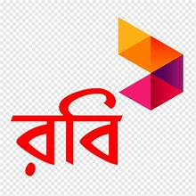

Robi Axiata PLC. (d/b/a Robi) is the second largest mobile network operator in Bangladesh.[6] Axiata of Malaysia holds a major controlling stake of 61.82% in the company, while Bharti Airtel of India holds 28.18% and investors in DSE and CSE hold 10%.[7] Robi first commenced operation in 1997 as Telekom Malaysia International (Bangladesh) with the brand name AKTEL. In 2010, the company was re-branded to Robi and the company changed its name to Robi Axiata Limited. As per government rule, the name changed to Robi Axiata PLC in 2024 as Robi is listed in Stock Market and a Public Limited Company. Robi Axiata has spectrum on GSM 900, 1800 and 2100 MHz bands. On 16 November 2016, Airtel Bangladesh was merged into Robi as a product brand of Robi, where Robi Axiata PLC is the licensee of Airtel brand only in Bangladesh. Having successfully completed the merger process, Robi has emerged as the second largest mobile phone operator in Bangladesh

Robi Axiata PLC started as a joint venture company between Telekom Malaysia and AK Khan and Company. It was formerly known as Telekom Malaysia International Bangladesh Limited which commenced operations in Bangladesh in 1997 with the brand name 'AKTEL'.[9] In 2007, AK Khan and Company exited the business by selling its 30% stake to Japan's
On 28 January 2016, it was announced that Robi Axiata and Airtel Bangladesh will merge in Q1 2016. The combined entity will be called Robi, to serve about 40 million subscribers combined by both networks. Axiata Group will own 68.3% share, while Bharti Group will own 25%, and NTT Docomo held 6.31% shares.[14][15] Finally Robi and Airtel were merged on 16 November 2016 and Robi set sail as the merged company.[16] Later on, in 2020, after a decade with Robi, NTT Docomo decided to leave Bangladesh by selling its remaining stake in Robi Axiata PLC to Bharti International.